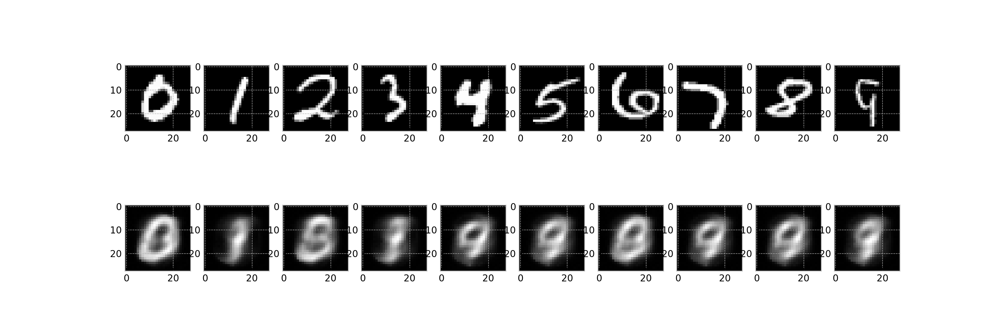

16.6. ae_mnist_animation.py#
このノートではmnistデータセットの次元圧縮を行うAEを実装しました．これの主要なパラメータをCLIオプションで変更できる形にしたプログラムae_mnist_animation.pyを作成してください．
このスクリプトは最終的に，任意のファイル名でアニメーション①に相当するgifファイルを作成することが目的です．
16.6.1. ae_mnist_animation.py#
pure pytorch
# packageのimport
import os
import argparse
import math
from typing import Any, Union, Callable, Type, TypeVar
from tqdm.auto import trange,tqdm
import numpy as np
import matplotlib.pyplot as plt
import seaborn as sns
plt.style.use("bmh")
# pytorch関連のimport
import torch
import torch.nn as nn
import torch.nn.functional as F
import torch.optim as optim
from torch.utils.data import Dataset, DataLoader
import torchvision
import torchvision.transforms as transforms
# animation
from matplotlib.animation import ArtistAnimation
from IPython.display import display, Markdown, HTML
def set_seed(seed:int)->None:
# 乱数のシードをここで固定しよう
# numpyの乱数シードを固定する
# torchの乱数シードを固定する
np.random.RandomState(seed)
np.random.seed(seed)
torch.manual_seed(seed)
torch.backends.cudnn.benchmark = False
torch.backends.cudnn.deterministic = True
class SimpleAE(nn.Module):
def __init__(self, in_features:int, n_components:int):
super().__init__()
self.in_features = in_features
self.n_components = n_components
# build layers
self.encoder = nn.Sequential(
nn.Linear(self.in_features, self.n_components),
nn.Sigmoid(),
)
self.decoder = nn.Sequential(
nn.Linear(self.n_components, self.in_features),
nn.Sigmoid(),
)
def forward(self, x:torch.Tensor)->torch.Tensor:
h = self.encoder(x)
return self.decoder(h)
def load_MNIST(batch=128)->dict[str, DataLoader]:
transform = transforms.Compose([
transforms.ToTensor(),
#transforms.Normalize((0.1307,), (0.3081,)),
#transforms.Lambda(lambda x: torch.flatten(x))
])
train_set = torchvision.datasets.MNIST(root="./data",
train=True,
download=True,
transform=transform)
# train_validation_split.
# see also https://qiita.com/takurooo/items/ba8c509eaab080e2752c#%E8%A7%A3%E6%B1%BA%E7%AD%962-torchutilsdatarandom_split.
n_samples = len(train_set) # n_samples is 60000
train_size = int(len(train_set) * 0.8) # train_size is 48000
val_size = n_samples - train_size # val_size is 48000
train_set, val_set = torch.utils.data.random_split(train_set, [train_size, val_size])
train_loader = DataLoader(train_set,
batch_size=batch,
shuffle=True,
num_workers=2)
val_loader = DataLoader(val_set,
batch_size=batch,
shuffle=False,
num_workers=2)
test_set = torchvision.datasets.MNIST(root="./data",
train=False,
download=True,
transform=transform)
test_loader = DataLoader(test_set,
batch_size=batch,
shuffle=False,
num_workers=2)
return {"train":train_loader, "validation":val_loader, "test": test_loader}
def get_sample()->list[torch.Tensor]:
transform = transforms.Compose([
transforms.ToTensor(),])
test_set = torchvision.datasets.MNIST(root="./data",
train=False,
download=True,
transform=transform)
test_loader =torch.utils.data.DataLoader(test_set,
batch_size=1,
shuffle=True,
num_workers=2)
sample = []
i = 0
for x,y in test_loader:
if y == i:
sample.append(x)
i+=1
if len(sample) == 10:
break
return sample
def main(max_epochs:int=100,
batch_size:int=128,
latent_dim:int=20,
learning_rate:float=0.01,
device:str="cpu",
**kwargs)->Any:
#学習結果の保存
history = {
"train_loss": [],
"validation_loss": [],
"validation_acc": [],
"frames": [],
}
"""学習過程の可視化"""
# 訓練中に利用する画像を用意しておく
sample_imgs = get_sample()
# プロットの雛形を用意しておく
fig_anime = plt.figure(figsize=[15,5])
axs = []
for i in range(20):
axs.append(fig_anime.add_subplot(2,10,i+1))
"""/学習過程の可視化"""
data_loader = load_MNIST(batch=batch_size)
model = SimpleAE(28*28, latent_dim).to(device)
criterion = nn.MSELoss()
optimizer = optim.Adam(model.parameters(), lr=learning_rate)
for epoch in trange(max_epochs):
# training step
loss = None
train_loss = 0.0
model.train()
for i,(x,y) in enumerate(data_loader["train"]):
x,y = x.to(device),y.to(device)
x = x.view(x.shape[0], -1)
# 勾配の初期化
optimizer.zero_grad()
# 順伝搬 -> 逆伝搬 -> 最適化
x_hat = model(x)
loss = criterion(x_hat, x)
train_loss += loss.item()
loss.backward()
optimizer.step()
train_loss /= len(data_loader["train"])
history["train_loss"].append(float(train_loss))
"""validation step"""
model.eval()
val_loss = 0.0
with torch.no_grad():
for x,y in data_loader["validation"]:
x,y = x.to(device),y.to(device)
x = x.view(x.shape[0], -1)
x_hat = model(x)
val_loss = criterion(x_hat,x)
val_loss /= len(data_loader["validation"])
#print("Validation loss: {}\n".format(val_loss))
history["validation_loss"].append(float(val_loss))
"""学習過程の可視化"""
model.eval()
with torch.no_grad():
history["frames"].append([])
for i in range(10):
art1 = axs[i].imshow(sample_imgs[i].view(-1,28).detach().cpu().numpy(),
cmap='gray')
sample_hat = model(sample_imgs[i].view([1,-1]).to(device))
history["frames"][-1].append(art1)
art2 = axs[i+10].imshow(sample_hat.view(-1,28).detach().cpu().numpy(),
cmap="gray")
history["frames"][-1].append(art2)
"""/学習過程の可視化"""
plt.close(fig_anime) # 余計な図を表示させないようにする
anim = ArtistAnimation(fig_anime, history["frames"], interval=150)
return anim
def parse_args():
parser = argparse.ArgumentParser(description="AutoEncoderでMNISTの学習を行い，その学習過程をgifアニメーションにして保存する")
parser.add_argument("--device", type=str, default="cpu")
parser.add_argument('--learning_rate', type=float, default=0.01)
parser.add_argument("--seed", type=int, default=42)
parser.add_argument("--save_path", type=str, default="./ae_mnist.gif")
parser.add_argument("--max_epochs", type=int, default=50)
parser.add_argument("--batch_size", type=int, default=128)
parser.add_argument("--latent_dim", type=int, default=20)
return parser.parse_args()
if __name__ == "__main__":
kwargs = parse_args()
set_seed(kwargs.seed)
# https://scrapbox.io/nwtgck/Python%E3%81%AEargparse%E3%81%AE%E3%83%91%E3%83%BC%E3%82%B9%E7%B5%90%E6%9E%9C%E3%81%AEvars()%E3%82%92%E4%BD%BF%E3%81%86%E3%81%A8dict%E3%81%AB%E3%81%A7%E3%81%8D%E3%82%8B
anim = main(**vars(kwargs))
anim.save(kwargs.save_path)
skorch
# packageのimport
import os
import argparse
import math
from typing import Any, Union, Callable, Type, TypeVar
from tqdm.auto import trange,tqdm
import numpy as np
import matplotlib.pyplot as plt
import seaborn as sns
plt.style.use("bmh")
# pytorch関連のimport
import torch
import torch.nn as nn
import torch.nn.functional as F
import torch.optim as optim
from torch.utils.data import Dataset, DataLoader
import torchvision
import torchvision.transforms as transforms
# animation
from matplotlib.animation import ArtistAnimation
from IPython.display import display, Markdown, HTML
from skorch import NeuralNetRegressor
import skorch
def set_seed(seed:int)->None:
# 乱数のシードをここで固定しよう
# numpyの乱数シードを固定する
# torchの乱数シードを固定する
np.random.RandomState(seed)
np.random.seed(seed)
torch.manual_seed(seed)
torch.backends.cudnn.benchmark = False
torch.backends.cudnn.deterministic = True
class SimpleAE(nn.Module):
def __init__(self, in_features:int, n_components:int):
super().__init__()
self.in_features = in_features
self.n_components = n_components
# build layers
self.encoder = nn.Sequential(
nn.Linear(self.in_features, self.n_components),
nn.Sigmoid(),
)
self.decoder = nn.Sequential(
nn.Linear(self.n_components, self.in_features),
nn.Sigmoid(),
)
def forward(self, x:torch.Tensor):
encoded = self.encoder(x)
return encoded, self.decoder(encoded)
def load_MNIST_skorch():
transform = transforms.Compose([
transforms.ToTensor(),
#transforms.Normalize((0.1307,), (0.3081,)),
transforms.Lambda(lambda x: torch.flatten(x)),
])
train_set = torchvision.datasets.MNIST(root="./data",
train=True,
download=True,
transform=transform)
test_set = torchvision.datasets.MNIST(root="./data",
train=False,
download=True,
transform=transform)
return {"train":train_set, "test": test_set}
class NeuralNetAE(NeuralNetRegressor):
def get_loss(self, y_pred, y_true, *args, **kwargs):
encoded, decoded = y_pred
recons_loss = super().get_loss(decoded, kwargs["X"], *args, **kwargs)
return recons_loss
class ReconsImage(skorch.callbacks.Callback):
@staticmethod
def get_sample():
"""0~9の数字の手書き文字画像をランダムに一枚ずつ適当に選ぶ"""
transform = transforms.Compose([
transforms.ToTensor(),])
test_set = torchvision.datasets.MNIST(root="./data",
train=False,
download=True,
transform=transform)
sample = []
i = 0
for x,y in iter(test_set):
if y == i:
sample.append(x)
i+=1
if len(sample) == 10:
break
return sample
def initialize(self):
"""最初に一度だけ呼ばれる"""
self.sample_imgs = self.get_sample()
self.fig_anime = plt.figure(figsize=[15,5])
self.axs = []
for i in range(20):
self.axs.append(self.fig_anime.add_subplot(2,10,i+1))
self.frames = []
def on_epoch_end(self, net, dataset_train=None, dataset_valid=None, **kwargs)->None:
"""epoch終了時に毎回呼ばれる"""
net.module_.eval()
frame = []
with torch.no_grad():
for i in range(10):
art1 = self.axs[i].imshow(self.sample_imgs[i].view(-1,28).detach().cpu().numpy(),
cmap='gray')
_, sample_hat = net.module_(self.sample_imgs[i].view([1,-1]).to(net.device))
frame.append(art1)
art2 = self.axs[i+10].imshow(sample_hat.view(-1,28).detach().cpu().numpy(),
cmap="gray")
frame.append(art2)
self.frames.append(frame)
def on_train_end(self, net, dataset_train=None, dataset_valid=None, **kwargs):
"""学習終了時に一回だけ呼ばれる"""
plt.close(self.fig_anime)
def parse_args():
parser = argparse.ArgumentParser(description="AutoEncoderでMNISTの学習を行い，その学習過程をgifアニメーションにして保存する")
parser.add_argument("--device", type=str, default="cpu")
parser.add_argument('--learning_rate', type=float, default=0.01)
parser.add_argument("--seed", type=int, default=42)
parser.add_argument("--save_path", type=str, default="./ae_mnist.gif")
parser.add_argument("--max_epochs", type=int, default=50)
parser.add_argument("--batch_size", type=int, default=128)
parser.add_argument("--latent_dim", type=int, default=20)
return parser.parse_args()
if __name__ == "__main__":
kwargs = parse_args()
set_seed(kwargs.seed)
recons_image = ReconsImage()
trainer = NeuralNetAE(
# models
SimpleAE(28**2, kwargs.latent_dim),
optimizer= optim.Adam,
criterion = nn.MSELoss,
# hyper-params
lr = kwargs.learning_rate,
batch_size=kwargs.batch_size,
max_epochs = kwargs.max_epochs,
device = kwargs.device,
train_split=skorch.dataset.ValidSplit(5), # 0.2 を valid setとして利用
# callbacks
callbacks=[("recons_image", recons_image)]
)
# prepare datasets
dataset = load_MNIST_skorch()
train_dataset = dataset["train"]
y_train = np.array([y for x, y in iter(train_dataset)]) # y_trainはダミーです．np.zeros(len(train_dataset))でもOK．
# training start!
trainer.fit(train_dataset, y_train)
anim = ArtistAnimation(recons_image.fig_anime, recons_image.frames, interval=150)
anim.save(kwargs.save_path)
16.6.2. usage#
(datasci) mriki@RikinoMac _prml % python ae_mnist_animation.py --help
usage: ae_mnist_animation.py [-h] [--device DEVICE] [--learning_rate LEARNING_RATE] [--seed SEED] [--save_path SAVE_PATH] [--max_epochs MAX_EPOCHS] [--batch_size BATCH_SIZE] [--latent_dim LATENT_DIM]
AutoEncoderでMNISTの学習を行い，その学習過程をgifアニメーションにして保存する
options:
-h, --help show this help message and exit
--device DEVICE
--learning_rate LEARNING_RATE
--seed SEED
--save_path SAVE_PATH
--max_epochs MAX_EPOCHS
--batch_size BATCH_SIZE
--latent_dim LATENT_DIM
16.6.3. 実行例：#
(datasci) mriki@RikinoMac _prml % ipython ae_mnist_animation.py --seed 0
[TerminalIPythonApp] WARNING | Unrecognized alias: 'seed', it will have no effect.
Installed osx event loop hook.
Shell is already running a gui event loop for osx. Call with no arguments to disable the current loop.
100%|█████████████████████████████████████████████████████████████████████████| 50/50 [06:31<00:00, 7.82s/it]
作成されたgifファイル：
